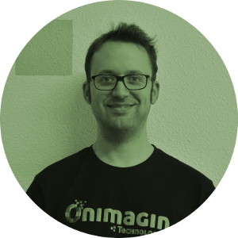
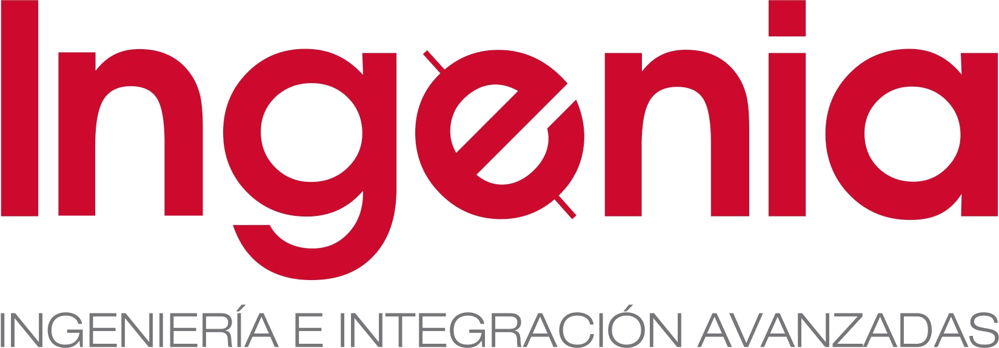

That's Who I Am

I started my professional career as a (CLASSIC!) systems administrator in Ingenia. My next stop was at the GRVC of the University of Seville, working for five years as a research assistant in robotics (PhD assault pending). At some point I decided to go back to my city of birth (Córdoba) and enjoying two fantastic years at Wimasis, where the seed of Onimagin Technologies was planted. After that I decided to face entrepreneurship and selfemployment and started a long colaboration with Phytoplant Research.
After several intense years supporting the Phytoplant Research project, the time has finally come for Onimagin Technologies, where side by side with my AWESOME COLLEAGUES we transform images (and data) into reality.
Technical Skills
Experience
Founder and Information Systems.
Image Analysis Startup. Our emblem is Turning Images into reality. With Wimasis (trademark) as our flagship and main project we try to find partners and clients to apply image analysis algorithms and AI techniques to transform our world.
Technologies/skills: C++, Qt, OpenCV, PHP, Python, MySQL, Virtual Machines, Docker, CI/CD, AWS, Shellscripting, Machine Learning, IoT, ...
Teacher.
Teacher in Ciclos Formativos de Grado Medio (CFGM) y Superior (CFGS). I think that the correct translation for these Spanish Titles are Vocational Education and Training (VET) and Certificate of Higher Education (HNC). So, I am teaching future Developers and Informatic Technicians.
Technologies/skills: C++, Java, PHP, MySQL, Qt, Android, Linux, Windows, Git, API Rest, ...
IT Engineer.
Member of the Engineering and Control department, responsible for all IT services in the company, developing an integrated data management system, using (and also designing) IoT devices for intelligent and precision agriculture as well as providing general research support: data analysis, process automation, equipment integration, ...
Technologies/skills: C++, Qt, PHP, MySQL, Virtual Machines, Shellscripting, OPC UA, Siemens Technology, IoT ...
Head of Processing Center.
Design and management of image analysis platform based on computer vision. Using several technologies to maintain a balanced cluster of high performance and high availability ... The germ that started Onimagin Technologies.
Technologies/skills: C++, Apache, Mysql, Torque, XEN, Shellscripting, PHP Prado Framework, ...
Research Assistant.
Research Assistant in several national and international projects about air and land cooperative robotics integrating different technologies. The main projects I was working for were:
- URUS - Ubiquitous networking Robotics in Urban Settings.
- ROBAUCO - Autonomous and Cooperating Robots.
- INTEGRA - Investigación en Tecnologías para la Gestión de la Migración.
- ADAM - Automation Development for Autonomous Mobility.
Technologies/skills:Linux, C++, Qt, Shellscripting, ROS, Drivers Development and Integration and also Electronics, Arduino, ...

Sysadmin.
Performing System Administration tasks in Linux, Windows and Solaris environments for the Data Processing Center of the Andalusian Employment Service. Development and Testing Servers Configuration. Installation and Maintenance of GForge environments. Web applications programming. Development of custom Linux distributions.
Technologies/skills:Weblogic,Postgre SQL, MySQL, Apache, Tomcat, JAVA, PHP, HTML, CSS, ...
Student Grant.
Maintenance of the database of spare parts used in the factory.
Technologies/skills: Visual Basic for Applications
Student Grant.
Conducted in the R&D department. Feasibility study of an Autonomous Electronic Kiosk, powered by solar energy.
Technologies/skills:Electronics and Power consumption calculations.